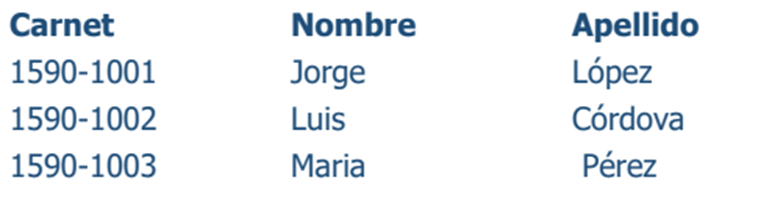

Es la unidad más pequeña a la cual uno puede referirse en un programa. Desde el punto de vista del programador representa una característica de un individuo u objeto. Ejemplo si quisiéramos almacenar la información de un estudiante los campos serían las características asociadas a este estudiante tales como:
Es una colección de campos de iguales o de diferentes tipos. Siguiendo con el ejemplo diríamos entonces que cada campo representa a un estudiante, el cual está formado por el grupo de campos o características individuales.
Es una colección de registros almacenados siguiendo una estructura homogénea.
Podemos decir entonces que una base de datos es una colección de archivos interrelacionados y cuyo contenido engloba a la información concerniente (almacenadas en archivos) de una organización, de tal manera que los datos estén disponibles para los usuarios.
En una base de datos relacional conoceremos como entidad a un objeto real o abstracto acerca del cual se almacenan
Elemento o dato que describe o identifica cada entidad dándole características propias. Normalmente los atributos son virtualmente ilimitados para una entidad, pero deben seleccionarse los de mayor relevancia para el problema que se está analizando. Ejemplo Para una entidad llamada “Persona”, se podría tener varios atributos como Nombre, Apellido, Peso, Estatura etc.
Una llave primaria es aquel atributo (o atributos) que consideramos clave para la identificación de los demás atributos que describen a la entidad. Ejemplo, si consideramos la entidad ALUMNO este podría tener los siguientes atributos: Carnet, Nombre, Dirección, Teléfono, de todos estos atributos el que podremos designar como llave primaria es el número de carnet, ya que es diferente para cada alumno y este los identifica de forma única dentro de la universidad.
Es uno o más campos de una tabla que hacen referencia al campo o campos de llave primaria de otra tabla, una llave foránea indica como están relacionadas las entidades. Ejemplo, en la entidad cliente la llave primaria es No_Cliente y en factura la llave Foránea se llama Cod_Cliente, estos datos se relacionan entre sí de la forma en que en una factura se almacena el código del cliente al que pertenece dicha factura.
Para insertar datos en una base de datos MySQL utilizando phpMyAdmin, primero inicia sesión en phpMyAdmin, selecciona la base de datos y la tabla donde deseas insertar datos. Luego, ve a la pestaña "Insertar" y completa el formulario con los valores para cada columna. Una vez completado, haz clic en "Insertar" para enviar los datos. Verifica la inserción en phpMyAdmin y repite el proceso según sea necesario, asegurándote de tener los permisos adecuados en la base de datos y la tabla.
Para restaurar una base de datos en MySQL Workbench, sigue estos pasos:
El mantenimiento es una parte integral de cualquier empresa exitosa y, por lo tanto, los DBA se esfuerzan todos los días para asegurarse de que sus bases de datos se mantengan actualizadas y funcionando correctamente. Los administradores de base de datos saben que deben hacer cuando las cosas salen mal y una de las más importantes es tener un Backup o copia de respaldo de tu base de datos disponible para restaurar lo más reciente posible.
MySQL Workbench es un software desarrollado por Oracle que permite administrar de forma remota bases de datos MySQL. Proporciona un entorno GUI integrado para el diseño de bases de datos MySQL. Puedes descargar MySQL Workbench desde el sitio web oficial de MySQL. Después de descargar el programa, sigue los pasos de instalación para instalar correctamente el software en tu máquina.
Pasos para importar la copia de seguridad:
Primero debemos ingresar a nuestro Mysql Workbench y seleccionar la opción Data Export, tal como se señala en la figura:
Nos aparecerá la siguiente pantalla:
Aquí seleccionamos la base de datos que queremos respaldar en nuestro caso seleccionaremos la BD "bdinventario".
Como veremos aparecen por defecto seleccionadas todas las tablas de la base de datos, para nuestro caso dejamos seleccionado todo por defecto. En las opciones de la parte inferior debemos escoger si queremos crear en una carpeta varios archivos por cada tabla o un solo archivo para toda la base de datos, en nuestro caso elegimos la segunda opción:

Finalmente, hacemos clic en "Start Export" para iniciar el proceso de backup.
Luego debemos seleccionar la ubicación y el nombre de nuestro archivo sql para poder guardarlo:
Presionamos el botón que dice Start Export.
Nos aparecerá la siguiente pantalla donde esperamos que Mysql Workbench termine su trabajo.
Para verificar que todo ha sido correcto, buscamos el archivo donde lo guardamos y lo abrimos con el bloc de notas para ver su contenido.
Ejecución de XAMPP con Mysql y APACHE
Ingresar en el navegador al http://localhost:80 y captura
Ingresar en el navegador al http://localhost:80/phpmyadmin . y captura
Ejecución de Workbench con el Estado de Servidor en Sever Status
Captura de Pantalla del Diagrama Entidad Relación de la base de datos universidadUMG